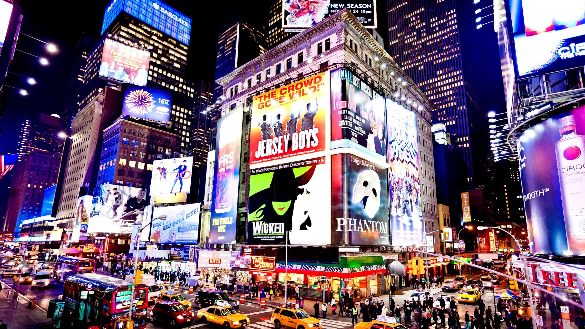

TravelBlog

Discover the romantic streets of Paris. Explore the Eiffel Tower, Notre-Dame, and the charming cafes that make the city an unforgettable destination. Whether you're wandering through Montmartre or cruising along the Seine, Paris offers endless beauty at every turn. Don't forget to visit the Louvre, home to thousands of world-renowned art pieces, or indulge in the city's fine dining at one of its Michelin-starred restaurants. If you're a fan of art, a trip to the Musée d'Orsay will let you admire masterpieces by Monet, Van Gogh, and other great artists. The city is perfect for those seeking both history and modern-day sophistication.
Paris isn't just for sightseeing—it's a place to experience a unique culture. Walk through the gardens of Versailles, where French royalty once resided, or visit the quirky shops and art galleries of Le Marais district. For an authentic Parisian experience, sit at a sidewalk café and sip on an espresso while watching the world go by. The city has something for everyone, whether you want to dive into its rich history or soak in the modern-day atmosphere.
Travel Tip: Always carry a power bank while exploring new cities, especially if you're planning to navigate with your phone for maps or photos. Make sure to download offline maps to save data and avoid getting lost in unfamiliar streets. It's also a good idea to learn a few basic phrases in the local language to enhance your travel experience and connect with locals. Knowing how to say “hello,” “thank you,” and “goodbye” in the local language can go a long way in making your trip more enjoyable.
Another tip is to pack light but efficiently. Remember to bring a comfortable pair of walking shoes, as you’ll likely be exploring on foot. It’s always useful to carry a travel-sized water bottle to stay hydrated, especially when walking around in hot weather. If you’re traveling internationally, it’s essential to keep your passport and any important documents safe—consider using a money belt or neck pouch to securely carry your valuables while on the go.

New York is a city that never sleeps. From Times Square to Central Park, there's always something exciting to experience in this bustling metropolis. Take a ride to the top of the Empire State Building for an incredible view of the city's skyline, or explore the vibrant neighborhoods like Chinatown, SoHo, and Brooklyn. Whether you're into art, food, or shopping, New York has something for everyone. Don't forget to check out Broadway shows, which are a must-see for theater lovers. The Museum of Modern Art (MoMA) and the Metropolitan Museum of Art are perfect for those looking to immerse themselves in world-class art collections.
But the beauty of New York lies not only in its famous landmarks but also in the small moments you experience while walking through its diverse neighborhoods. Take a stroll through the streets of Greenwich Village or the trendy neighborhoods of Williamsburg in Brooklyn to feel the pulse of the city. With its iconic yellow cabs, vibrant street art, and endless entertainment options, New York City is truly the world's greatest city.
New York’s culinary scene is also something to write home about. From iconic food trucks serving hot dogs and pretzels to upscale restaurants offering international cuisine, there’s always something new to try. Don’t miss the opportunity to eat at Katz's Delicatessen for a taste of the best pastrami sandwich in the city, or head to Little Italy for a plate of fresh pasta.